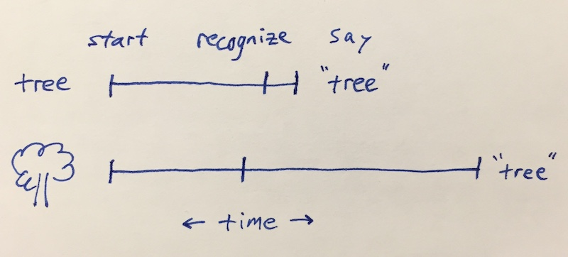

Cattell didn't say we process words faster than pictures
Wednesday November 11, 2020
James Cattell wrote: "experiments I have made show that we can recognise a single colour or picture in a slightly shorter time than a word or letter, but take longer to name it."

This is consistent with words being distinct from the concepts they represent.
Reading the excellent How a flawed idea is teaching millions of kids to be poor readers, I was struck by this interesting claim:
"If you're a skilled reader, your brain has gotten so good at reading words that you process the word "chair" faster than you process a picture of a chair."
That sentence points to footnote 34:
"This was established in the late 19th century by a researcher named James Cattell who compared reaction times to words and images using a newly developed timing mechanism that could measure reactions to within 1/1,000th of a second. See this book, p. 30."
That book is Essentials of Assessing, Preventing, and Overcoming Reading Difficulties, and the relevant paragraph on page 30 is:
"James Cattell published a paper in 1886 demonstrating a newly developed timing mechanism that could measure reaction times to within 1 millisecond (i.e., 1/1,000th of a second). With this level of precision, he discovered that the reaction times for reading printed words like chair or tree were faster than reaction times for naming a chair or a tree when shown a picture of those items. Thus, over 125 years ago, there was evidence that naming objects and naming written words were not the same skills, contrary to our intuitions."
That 1886 paper is The Time it Takes to See and Name Objects. The paper is under three pages long. It doesn't convince me that Cattell had millisecond precision in his measurements, and it's not principally about comparing words and images. There's one relevant paragraph:
"The time required to see and name colours and pictures of objects was determined in the same way. The time was found to be about the same (over ½sec.) for colours as for pictures, and about twice as long as for words and letters. Other experiments I have made show that we can recognise a single colour or picture in a slightly shorter time than a word or letter, but take longer to name it. This is because in the case of words and letters the association between the idea and name has taken place so often that the process has become automatic, whereas in the case of colours and pictures we must by a voluntary effort choose the name. Such experiments would be useful in investigating aphasia."
It isn't explained in the paper, but I have to imagine he measured recognition as distinct from naming via some mechanism like tapping when you see a picture of a tree, for example.
So the consistency of the quotes above with the Cattell source depends on what it means "to process." If it means "to name," then it's consistent. But if it means "to recognize," which I think is more natural, then it doesn't convey the result Cattell published.
I think this is all fascinating; I'd love to learn about more recent research on this topic.